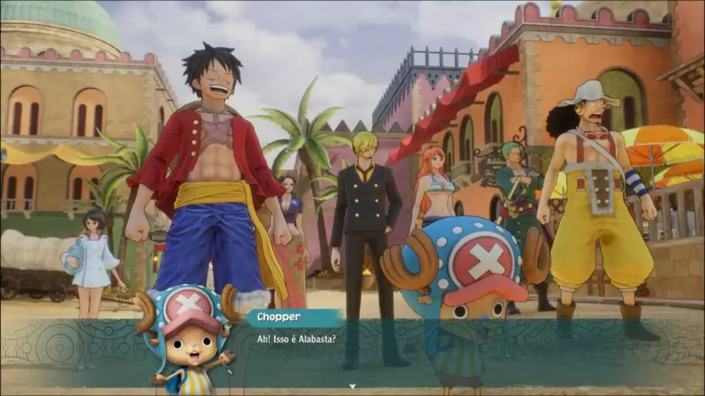
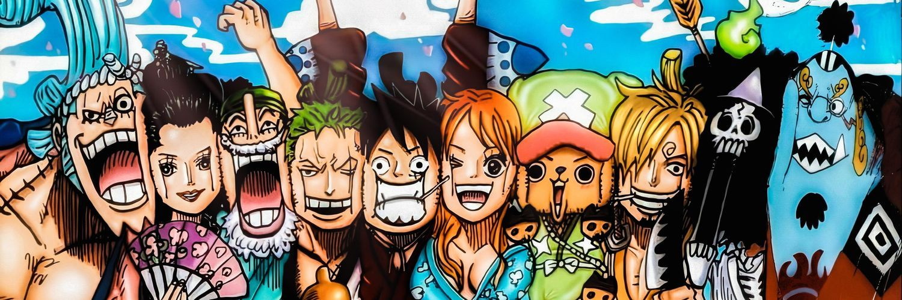

¡Un nuevo juego de rol de la enormemente popular serie de manga y anime ONE PIECE, que conmemora el 25 aniversario de la serie!
El famoso pirata Monkey.D.Luffy, mejor conocido como Luffy Sombrero de Paja, y sus Piratas de Sombrero de Paja, navegan por el Nuevo Mundo en busca de la próxima isla y la próxima aventura que les espera. Sin embargo, durante su viaje se ven atrapados en una tormenta y naufragan. Terminan varados en una exuberante isla tropical rodeada de constantes y terribles tormentas...
Separado de su tripulación, Luffy emprende una nueva y gran aventura para encontrar a sus amigos y escapar de la isla. ¡Peligrosos enemigos nuevos, aterradoras fuerzas de la naturaleza y mucho más les esperan!
¡Juega como varios miembros de los Piratas de Sombrero de Paja en un juego de rol clásico ambientado en el mundo del popular anime ONE PIECE!
* Además de este producto, también está disponible ONE PIECE ODYSSEY Deluxe Edition y otros contenidos digitales. Ten cuidado de no hacer compras duplicadas.
Si ya tienes la versión para PS4™ de este juego, puedes conseguir la versión digital para PS5™ sin costo adicional y sin necesidad de comprar este producto. Quienes tengan el disco de juego de PS4™ deberán introducirlo en la consola PS5™ cada vez que quieran descargar o jugar la versión digital para PS5™. Quienes tengan el disco de juego de PS4™ y compren la consola PS5™ edición digital, sin lector de discos, no podrán conseguir la versión para PS5™ sin costo adicional.
Trailer del juego:
Imagenes

